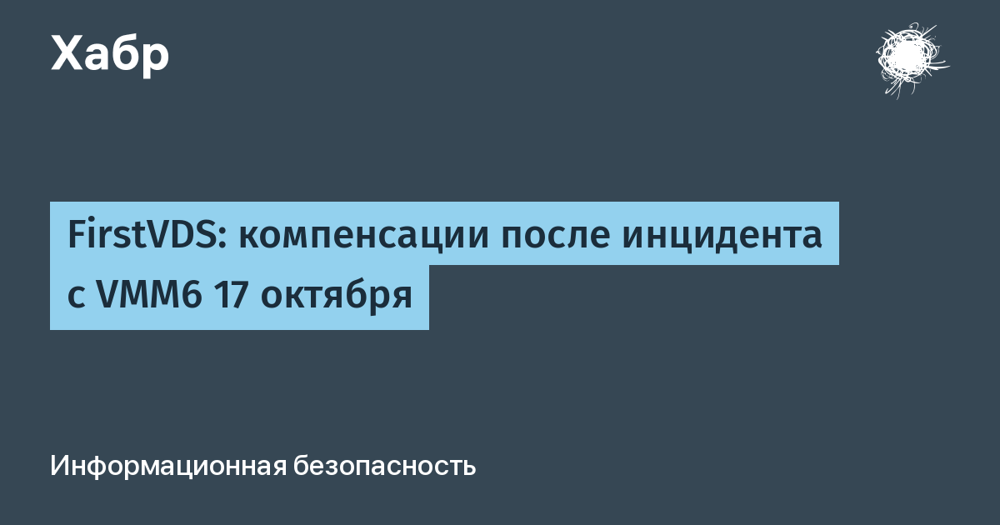

18 октября FirstVDS сообщил, что через уязвимость в системе управления виртуализацией VMmanager 6 (платформа ISPsystem, входит в «Группу Астра») злоумышленники получили доступ к части сетевой инфраструктуры и данным некоторых клиентов. Вендор позже подтвердил эксплуатацию ранее неизвестного 0-day: помощь пришёл из особенностей Nginx, который пропускал специальные запросы. Инженеры FirstVDS закончили собственное разбирательство ещё 21 октября, не дожидаясь отчёта вендора; ISPsystem выпустил комплекс обновлений и переработал защитную архитектуру вместе со специалистами Kaspersky Incident Response.
Свежий пост FirstVDS на Хабре (13 ноября) раскладывает компенсации по полочкам. Если оплаченный сервер не был выдан или был недоступен из-за инцидента — перерасчёт через тикет в личном кабинете (новый тикет писать не нужно, достаточно дополнить существующий). Если первое сообщение от поддержки пришлось ждать дольше 12 часов — сертификат на баланс аккаунта, номинал зависит от самого долгого ожидания, учесть обещают все обращения с 17 октября по 10 ноября включительно. Сертификат можно применить один раз.
Самое резкое место заявления: выплаты за компрометацию данных и расходы на срочную смену паролей, ключей и токенов не предусмотрены. То есть неделю (а то и дольше) менять доступы на всех серверах клиенты были обязаны сами — хостер это расходом не считает. Официальных цифр о количестве затронутых аккаунтов и типах утечек компания по-прежнему не приводит; оценки «десятков тысяч VPS у разных хостеров» в октябре были именно экспертными, а не данными FirstVDS.
Практический чек-лист из самой ситуации: проверить, не стоит ли ваш VPS на сборке VMmanager 6 Hosting, поставить обновления вендора, ротировать все пароли, SSH-ключи и API-токены, которые были доступны с сервера или в панели, проверить логи авторизаций с 17 октября, а перерасчёт за простой запросить письменно — устные обещания поддержки к делу не пришьёшь. Если на сервере крутился чужой продакшн — уведомить своих клиентов так, как это сделал FirstVDS: официально и с датами.
Инцидент переехал из разряда «взломали панель» в разряд «кто платит за последствия»: уязвимость — у вендора, доступы менял клиент, а компенсация ограничена перерасчётом за простой. Для рынка, где VMmanager стоит у десятков российских хостеров, прецедент заметный.